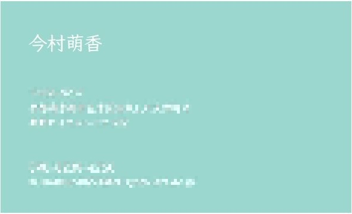
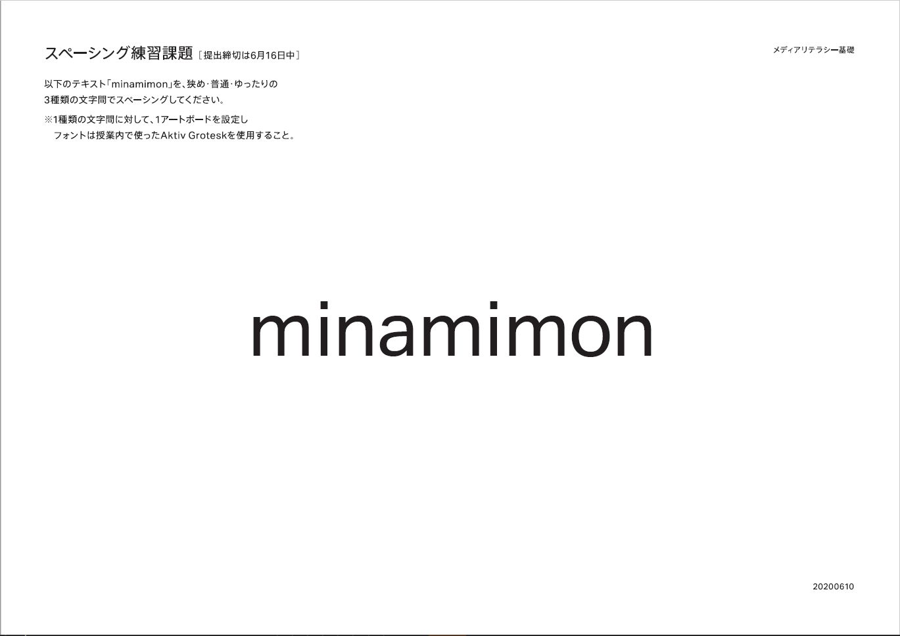
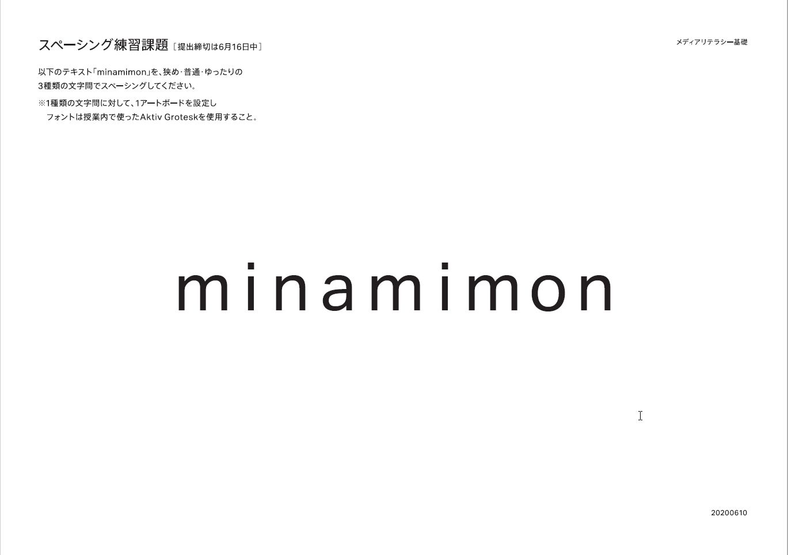
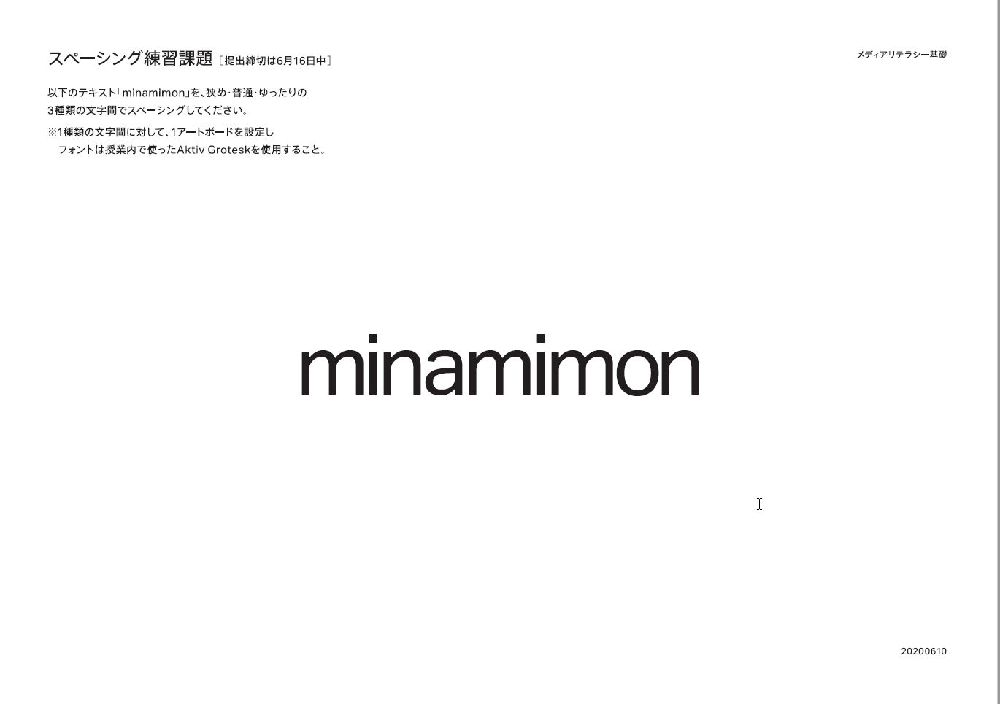
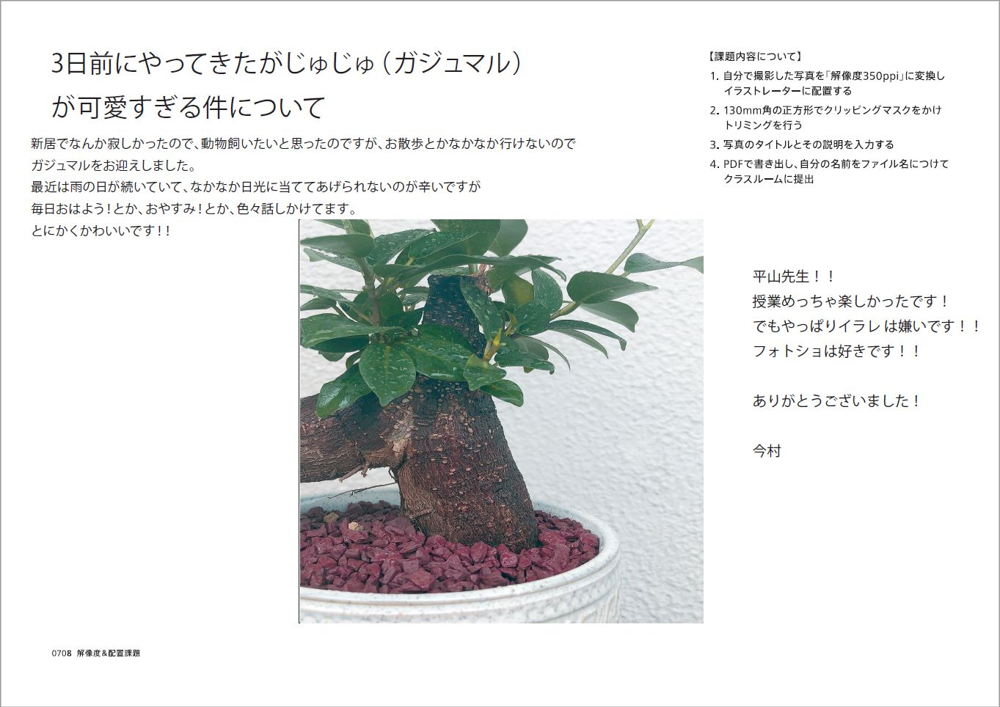

過去の作品
Session:1
課題：名刺をデザインしてみる
シンプルにわかりやすさを目指し、色に柔らかく名前の萌え色を連想する色を使用。（個人情報のところはモザイクしてます。）

Session:2
課題：スペーシング練習課題
以下のテキスト「minamimon」を、
- 普通
- ゆったり
- 狭め
の3種類の文字間でスペーシングしてください
|  |  |  |
＊1種類の文字間に対して、１アートボードを設定しフォントは授業内で使ったAktiv Groteskを使用すること
Session:3
課題：解像度＆配置課題
- 自分で撮影した写真を「解像度350ppi」に変換しイラストレーターに配置する。
- 130mm角の正方形でクリッピングマスクをかけトリミングを行う。
- 写真のタイトルとその説明を入力する PDFで書き出し、自分の名前をファイル名につけてクラスルームに提出
